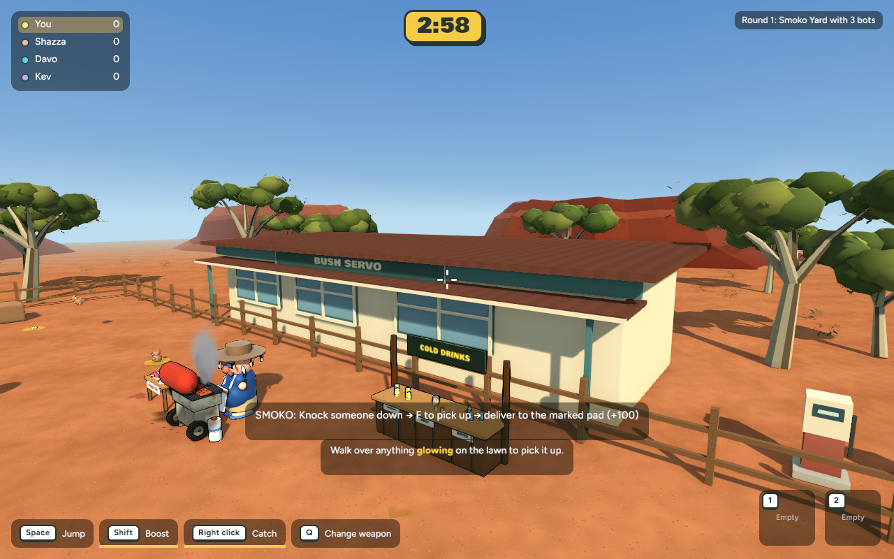
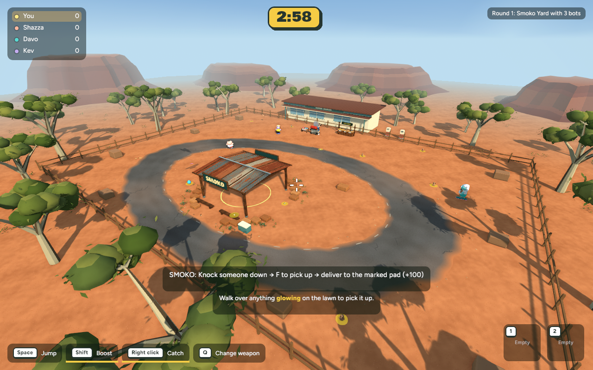
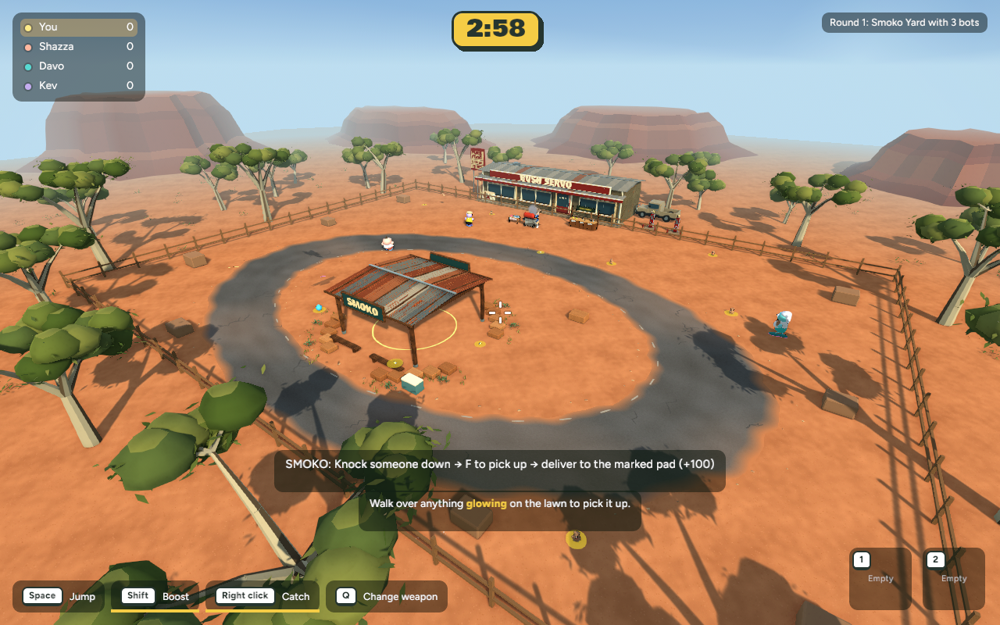
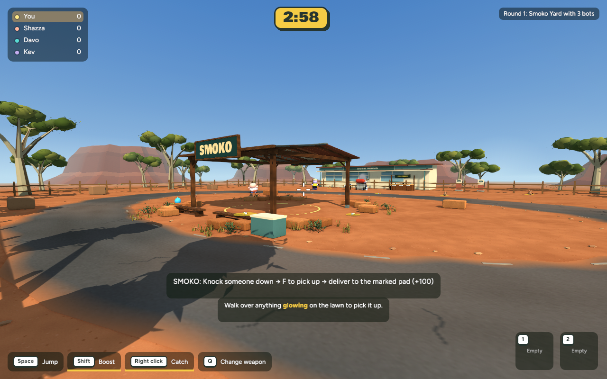
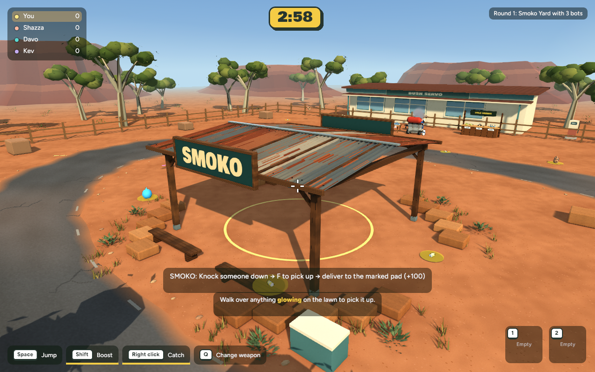
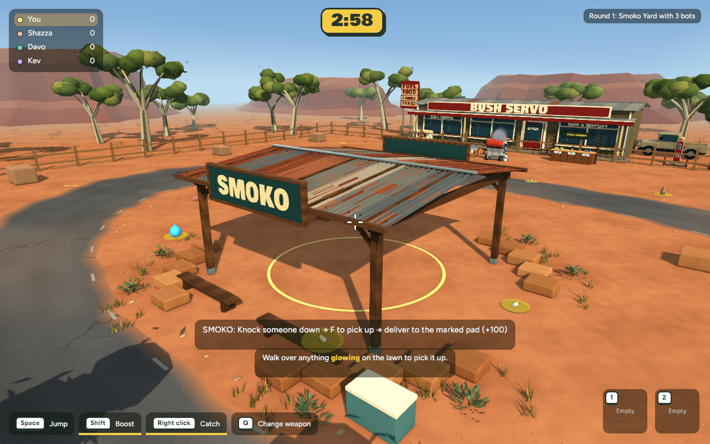
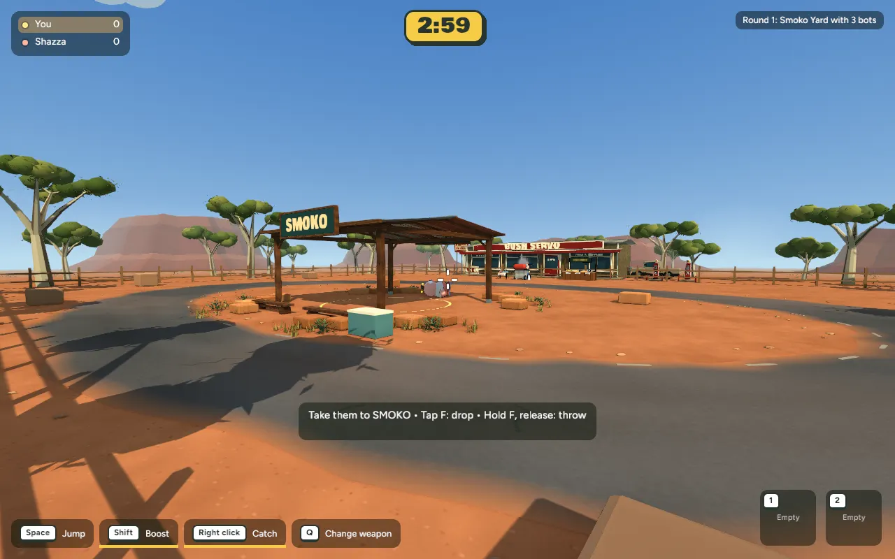

Servo close view
Before — Stage 3

After — Stage 4
Browser published with user approval, 27 October 2026. Play online — refresh and choose Smoko Yard. The temporary link requires this Mac to remain online.
Stage 4 · 27 October 2026 · Actual implemented game captures
Pale weathered timber, a cream-and-red shop front, deep veranda, corrugated roof, window frames, gutters, readable signage, an ICE freezer, two vintage pumps and a parked ute. The new scenery is beyond the northern fence; gameplay and collision boundaries are unchanged.
Uses Poly Haven timber by Rob Tuytel (CC0) and a Sketchfab Vintage Gas Pump by Rescue3D Assets (CC BY 4.0). Asset credits ship in How to play. No paid generation used.







Actual native game, scripted moving-camera delivery. Final score +100, carried player released. This is not a fresh human multiplayer test.
| View | Mean ms before → after | Change | p95 ms |
|---|---|---|---|
| overview | 7.182 → 7.470 | +4.0% | 11.344 → 10.873 |
| gameplay | 7.497 → 7.603 | +1.4% | 12.535 → 10.312 |
| close | 7.397 → 7.621 | +3.0% | 11.936 → 11.743 |
| servo | 7.377 → 7.663 | +3.9% | 12.242 → 11.425 |
600 measured wall-clock intervals after warmup, 1280×800, identical cameras/settings, builds stopped. Final averages 130–134 FPS; cost +0.11 to +0.29ms (1.4–4.0%). Not GPU timestamp measurements or a browser performance guarantee.
New GLB: 8.18 MB, 47,662 triangles, 16 material batches. Decoded scene image bytes increased from 51.93 to 78.14 MB (+26.21 MB). Materials +7; visible mesh entities −25. Timber was reduced to 512px with a cream glaze and broader tiling to reduce fine-pattern aliasing; pump textures capped at 1024px, overlays 512px.
439 core tests pass; native release and browser WebAssembly builds pass. Final game captures load the complete asset without errors. Backyard smoke capture and Smoko delivery pass. PNG-only embedded textures verified; all new geometry remains north of z=−24.02. Network rules and protocol unchanged.
This is closer to the concept's building composition, not an exact rendering match. Lighting, fine distant-texture filtering, vegetation shading and the full small-prop density remain later work. The ute is a simple silhouette; the shop and pumps are decorative. No new online multiplayer or browser frame-time measurement was performed.
Recovery checkpoint and publication status · Backyard regression capture
cd /Users/marcus/Claude/australian-bbq/rust ~/.cargo/bin/cargo run -p bbq_app --release -- --menu
Choose Maps / Game modes → Smoko Yard.